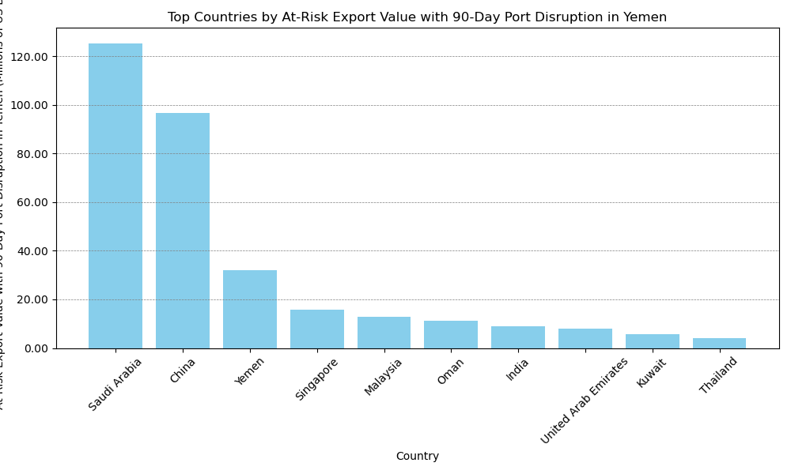

Port Disruption Spillover Estimates#
What is Spillover?#
Spillover in this context refers to indirect effects that changes or disruptions in the maritime transport network can have on global supply chains and economies. This includes how events such as port closures or localized disruptions like conflict can affect global trade flows, supply chains, and economic activities across multiple countries and industries.
In the paper, Ports’ Criticality in International Trade and Global Supply Chains, the authors present a methodology for estimating how disruption to one port can place other ports or countries’ export capacity (mesured in metric tons) and value (measured in USD) at risk.
Data#
This analysis uses data from the IMF Portwatch Portal:
Spillover similulator-generated data for at-risk capacity (metric tons) dataset:Portwatch Spillover At-Risk Capacity Simulator Data.
Spillover simulator-generated data for at-risk-value (USD) dataset: Portwatch Spillover At-Risk Value Simulator Data
The Portwatch data draw upon a port-level geospatial layer describes the network of port-to-port connections given vessels movements between two respective ports. The network is based on a satellite-derived dataset of vessel movements of around 10,000 vessels between 2019 and 2020, from which a port-to-port transport network was constructed.
The spillover simulator estimates the amount of maritime capacity being at-risk of facing delays or disruptions due to port disruptions that affect outgoing vessel movements. These estimates are based on data as of November 12, 2023. The model assumes a linear relationship between the number of days of disruption and the impacts, measured in terms of lost metric tons (capacity) or USD (value)
Methodology#
Two sets of analyses have been completed – first, analyzing the impact of 90-day Yemen port disruptions on export capacity risk (measured in metric tons) for other countries, and the second analyzing the impact on export value risk (measured in USD).
Estimating At-Risk Capacity of a Port Disruption (Metric Tons) by Country#
For this analysis, we filtered the global dataset for exports to all Yemen ports. We then identified the top ten countries whose at-risk daily capacity (aggregated across all ports in a country) were the highest if any of the Yemen ports were disrupted. We then followed the paper’s guidance on the linear relationship between daily at-risk capacity and the number of days of disruption and multipled the at-risk capacity by 90 days. With these steps, we produced the following bar chart and table.
Origin Country |
Daily Capacity at Risk (metric tons) |
Capacity at Risk - 90-Day Disruption (metric tons) |
|
|---|---|---|---|
1 |
Saudi Arabia |
12,643 |
1,137,914 |
2 |
Djibouti |
11,861 |
1,067,472 |
3 |
United Arab Emirates |
3,856 |
347,039 |
4 |
Türkiye |
3,282 |
295,411 |
5 |
South Africa |
1,510 |
135,862 |
6 |
Russian Federation |
1,304 |
117,355 |
7 |
Oman |
1,076 |
96,858 |
8 |
Ukraine |
998 |
89,842 |
9 |
Egypt |
837 |
75,349 |
10 |
Malaysia |
731 |
65,745 |
In the above, we see that Saudi Arabia is most impacted by a 90-day disruption at a Yemen port, with more than 1.1 million metric tons of export capacity at risk, followed by Djibouti, with 1.0 million metric tons.
Estimating At-Risk Export Value of a Port Disruption (USD) by Country#
For this analysis, we filtered the global dataset for exports to all Yemen ports. We then identified the top ten countries whose at-risk daily export value (aggregated across all ports in a country) were the highest if any of the Yemen ports were disrupted. We then followed the paper’s guidance on the linear relationship between daily at-risk value and the number of days of disruption and multipled the at-risk value by 90 days. With these steps, we produced the following bar chart and table.

In the above chart, we see that, again, Saudi Arabia has the most export value at-risk with a 90-day disruption at a Yemen port, with USD 125 million , followed by China, with USD 96 million.
In terms of percentage of total export value, the impact on other countries is less than a percentage point of their total exports.
Implementation#
The complete code for reproducing the above results may be found here: Github Notebook